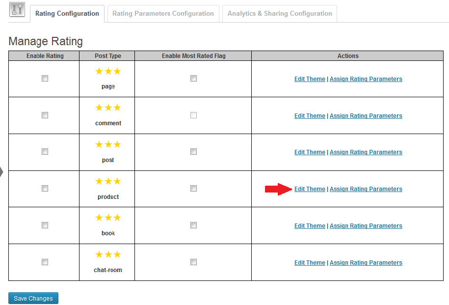

Contributors: Divesh Kumar, Paritosh Gautam
Tags: Rating, Demographic information, Rating by region, Rating by post, Rating by Page, Rating by post type
Requires at least: 3.0
Tested up to: 3.5
This plugin can be set with different rating boxes for different entities like post / page / comments.
Goto settings/Rating Settings from admin you will see the following screen:
Multiple entities are listed in the list shown in the screenshot above. If you want to enable the rating for post then tick the Enable checkbox and click on save changes.
Changes will reflect on the post detail and blog listing page as shown in the screenshots below:
You may assign a differnt rating box for every entity type by going to Settings/Rating Settings and click on the link highlighted in the screenshot below:

When you click on this link it will open a popup window as shown below:
Select rating theme/images for post/pages/comments etc, and save changes.
You may also provide your custom images as well. Goto plugins/sn_rating/images/themes/YOUR_DIRECTORY and put active.png (for active image) and non_active.png (for non-active image). Your custom images will start showing in the list of different rating scale images.
Multiset Rating Parameters can be created for rating boxes as well where user can rate the content based on different parameters like efficiency, cost, valuable etc.
To create Rating Parameter in admin panel goto Settings/Rating Settings and click on Rating Parameters tab:
Existing Factors are listed down in a table format where you can Edit and Delete. To create a new Rating Factor under Add Rating Parameter field provide the label for factor and click on save changes which will save the record and refelection will update the table with new factor.
Once factors are created they need to be attached with an entity to make them visible. To assign factors with entities again goto Settings/Rating Settings and on General Tab in the list of entities click on Assign Rating Parameters.
This will open a popup like in the screenshot below:
Select Rating Parameters you want to attach with the current entity and click on save changes. See the screenshot below for post page visibility of multiset factors.
Goto Settings/Rating Settings and on General Tab select the and tick the Enable Most Rated Flag. This will make content as Most Rated Content and this will be shown in the content as shown below:
On Settings/Rating Settings there is a tab for Advanced Tab.
Demographic mode shows the details of top 10 regions where rating was provided, which is through the widget.
Rating Widget (No Multi Factor)
Rating Widget (Multi Factors)
Share Buttons
Demographic mode checkbox by default is disabled, To enable DemoGraphic Mode please download Gzip File and extract this in plugins/sn_rating directory.
Download and Extract Gzip File (GeoLiteCity1.dat)
Check mark Demographic mode for Demographic feature to enable
Rating Scale configuration
Analytics Page for rating information